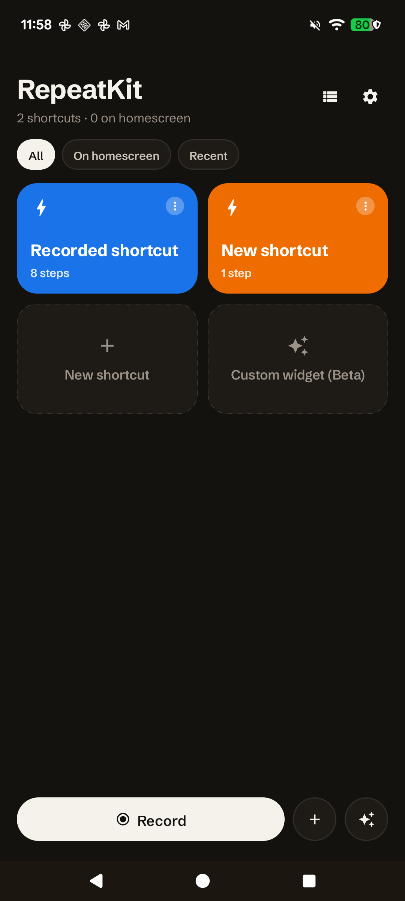
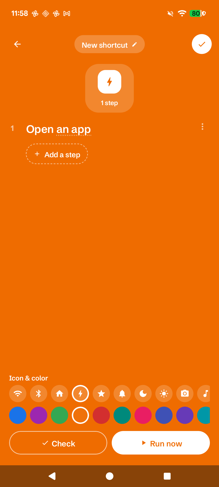
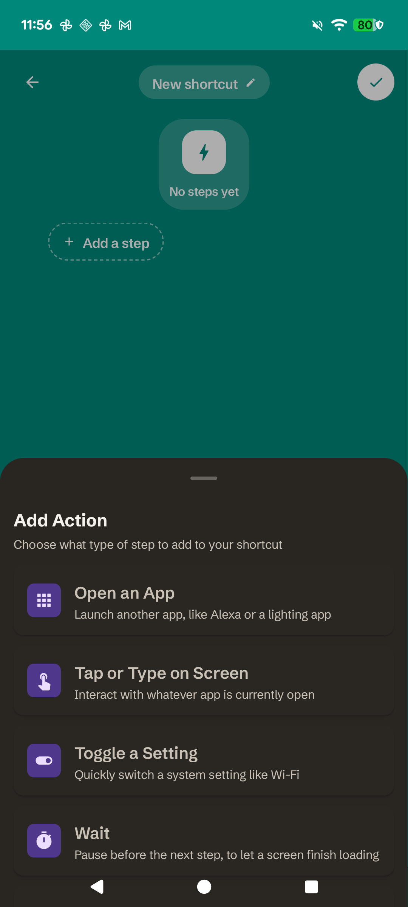

Show it once. Run it locally.
Record the taps, scrolls, and typing you do across your Android apps. RepeatKit captures every step and replays the exact sequence later — from the app, a home-screen widget, or the editor. No cloud. No account. Just your phone.
Coming to Google Play


Automate what you actually do.
Record real interactions
Hit Record and use your phone normally. RepeatKit captures the actual taps, scrolls, and typing you perform across any app — not just app launches or deep links.
Review every step
Before anything runs, you see every captured step in a clear list. Edit, reorder, or remove steps. You stay in control of exactly what your shortcut does.
One-tap widget
Pin any shortcut to your home screen as a widget. One tap and it runs — no need to open the app first. Shortcuts run reliably in the background.
Safe "Check" mode
Validate a shortcut without running it. Check mode walks through every step and verifies it can find the right elements, without actually tapping or typing anything.
Confirmation before action
Steps that send a message, dial a number, or make a real HTTP request pause and ask you to confirm first. Nothing irreversible runs without your explicit OK.
100% on-device
No account, no login, no server. Your shortcuts and recorded steps never leave your phone. RepeatKit works entirely locally — even without an internet connection.
AI Describe — experimental
An optional feature that can draft shortcut steps from a typed description using a small on-device language model (FunctionGemma, ~270 MB). The model is downloaded once, on demand, directly from Hugging Face's CDN — not from our servers. It runs entirely on your phone.
This is clearly experimental: the AI drafts steps that you must still review and approve before they run. It's a convenience for getting started, not a replacement for checking each step yourself.